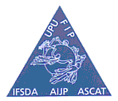

|
|
Fight Against the Illegal Stamp Issues |
 |
|
|
Fight Against the Illegal Stamp Issues |
 |
Le système de numérotation des timbres-poste (WNS) de l’UPU sur Internet (communiqué de presse de l'UPU)
(Berne, le 1er octobre 2002)
L’Association mondiale pour le développement de la philatélie (AMDP) vient de placer sur Internet son système de numérotation (WNS). Le site Web WNS, librement accessible en français et en anglais, se trouve sur le site Web de l’UPU www.upu.int sous la rubrique «Philatélie». On peut également y accéder directement à l’adresse www.wnsstamps.ch
Neuf mois après son lancement le 1er janvier 2002, plus de cent administrations postales ont adhéré au système de numérotation des timbres-poste de l’AMDP. L’initiative vise à protéger non seulement les intérêts des instances d’émission de timbres-poste, mais aussi ceux du marché philatélique dans son ensemble. Elle bénéficie du soutien inconditionnel de toutes les organisations membres de l’AMDP.
Le système s’applique à tous les timbres-poste émis depuis le 1er janvier par les autorités compétentes des Pays-membres de l’UPU ainsi que de leurs territoires et dépendances affiliés à WNS. Un numéro WNS unique (comprenant le code pays ISO 3166 Alpha-2, un numéro d’ordre et l’année d’émission) est attribué à chaque timbre-poste. Tous les timbres ayant le même dessin et la même valeur, qu'il soient produits dans un ou plusieurs formats (feuillet, feuillet miniature, bloc, carnet, rouleau, feuillet ou rouleau autocollant, feuillet souvenir ou commémoratif, etc.), seront considérés comme un seul et même timbre. Ils auront donc un seul numéro WNS. L’image scannée du timbre ainsi que les versions anglaise et française des données techniques y relatives (perforation, format, thème, etc.) sont reproduites sur le site Web WNS.
Ce dernier constitue un registre international centralisé qui peut être un puissant outil de référence pour les postes, les éditeurs de catalogues philatéliques, la presse spécialisée et les philatélistes, permettant de vérifier l’authenticité des timbres d’une administration membre ou d’effectuer une recherche sur un thème particulier. Il faut toutefois rappeler que, si la l’adhésion à WNS est vivement recommandée, elle n’en demeure pas moins un acte volontaire, et les timbres émis par une administration de l’UPU n’ayant pas encore intégré le système ne sauraient être considérés comme irréguliers ou illicites. Le seul inconvénient pour les administrations n’ayant pas encore adhéré au système sera l’absence de leurs timbres-poste sur le site Web WNS. Cela signifiera que ces administrations se priveront de possibilités de promotion et de parts de marché supplémentaires.
More information about the WNS can be obtained from the IB of the UPU, Mr. Jean-François Logette
Information about the illegal issues can be obtained directly from the IB of the UPU, Mrs. Maria Libera
| Published: 10/23/2002. Revised:
02/15/03. Copyright © 2002 by WADP & PWO All rights reserved worldwide. |